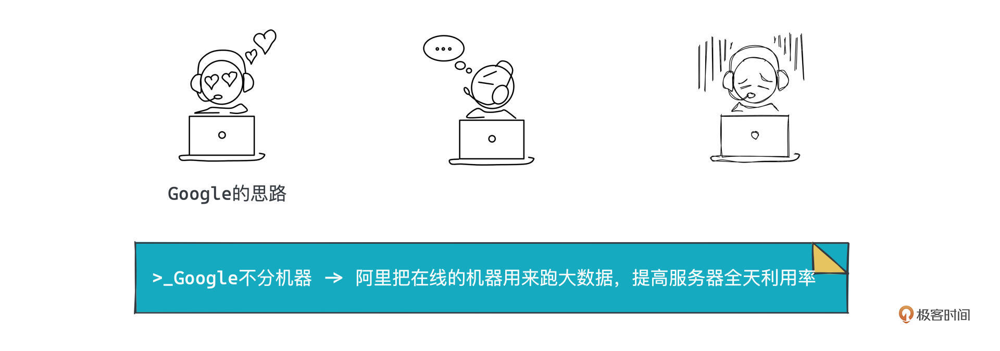
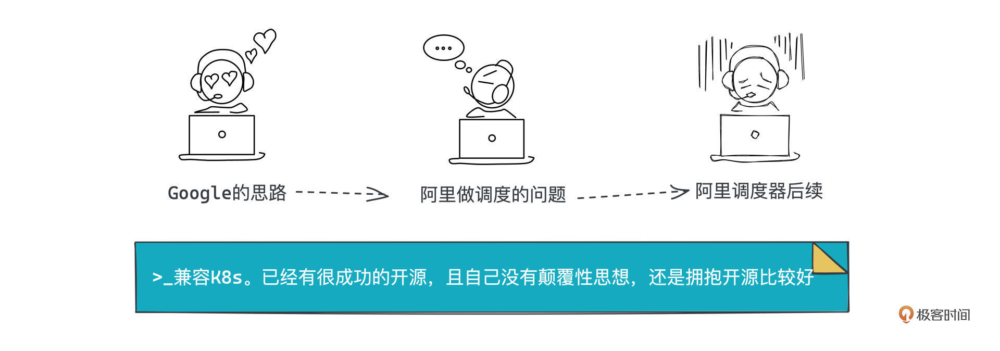

- 01 小厂项目：做程序员不难，难的是做职业程序员.md.html
- 02 小厂创业：做出一个产品，卖给所有人.md.html
- 03 淘宝HSF：能让淘宝出重大故障的就那批人.md.html
- 04 淘宝消防队：真正最优秀的程序员不应该是英雄.md.html
- 05 HBase_T4：Leader最重要的，说白了是要赌未来.md.html
- 06 异地多活：技术圈子的人，见过猪跑很重要.md.html
- 07 运维团队：我能干，只是我不想干而已.md.html
- 08 基础团队：研发效能部门，解决不了研发效能问题.md.html
- 09 统一调度：只是问题非常多而已，摔出来就行了.md.html
- 10 出走大厂：离职？还是不离职？这是一个问题.md.html
- 11 CEO心得：大厂出来创业，最大问题是对钱没概念.md.html
- 团队：在人身上，你到底愿意花多大精力？.md.html
- 开篇词 这一次，我们来采访毕玄.md.html
- 成事：技术人最大的问题就是情怀化.md.html
- 文化：你所在的团队，有多少人敢讲真话？.md.html
- 方向：技术演进，到底该怎么思考未来？.md.html
- 架构：架构师只是个角色，不是个岗位.md.html
- 番外：一位险些没上得了大学的青年，如何开启计算机征程.md.html
- 捐赠
09 统一调度：只是问题非常多而已，摔出来就行了
你好，我是叶芊。- - 上节课我们聊到16年毕玄拆完运维去带系统软件事业部跟研发效能部的经历。- - 对于高层根本不感兴趣的研发效能团队，定位是个大问题，做了一通现状分析之后，他终于找到了清晰的发力点：短期做代码智能化，长期解研发模式和环境干扰。- - 对于另一个团队——系统软件部，虽然高层给了明确目标，但他说做的也很不顺利，最后能做成也很难讲，可能时机比较巧。- - 作为自己在阿里14年的第三大亮点，统一调度的成功居然归因于“时机”？为什么？让我们跟着亲历这个集团级项目的总架构师，看一看当时有哪些障碍？他又是怎么处理的？
- 极客时间：你当时带两个团队，研发效能之外就是统一调度，这个部门的目标是什么？
毕玄：本质也是成本，阿里内部以前有好几套调度系统，这次想做成一套统一的，我们叫Sigma，向Borg的下一代Omega致敬。
调度我们做了很多年，2011年做容器化T4就是，核心目标就是为了控制成本，当时我们做了两三年，大概知道了在这方面Google的Borg做得非常好。
那个时候传闻Google认为自己的核心竞争力是什么？最早他就做搜索，他认为自己最重要的竞争力是，一我排序结果的准确度比多数公司好；二做同样的效果我付出的成本是你们的1/10。这确实是，成本如果差这么远，商业上就没办法做下去了，这里面，Google觉得调度系统Borg承担了很大角色，类似它的Page Rank算法，是整体竞争力的一部分。
所以外部很少有Borg的信息，保密性做得非常好。后来我们知道一点是，2015年Google发表Borg论文，那其实几年前就写好了，只是内部一直摁着不让发，觉得可能对业务的核心竞争力有影响。
极客时间：所以13年你们了解到的信息是什么，可以具体说下吗？
毕玄：就是个思路。我们知道了以后都觉得哇这个思路简直太完美了，其实大家都能想到，但我们需要有人给信心，因为这个思路大家都觉得太难。
是这样，因为多数公司的机器会分成很多个池子，最典型的是一个机器池子用来跑在线业务，另外一个用来做大数据的业务。
大数据这个软件的核心设计思想就是尽量并行化，把一台机器的资源全部吃光，所以大数据特别吃资源，能把池子用得特别满。而在线业务，不是不想吃资源，它必须考虑的是什么？是稳定性，如果出问题了，我最好要有足够的冗余，加上一天还有很多不确定的高峰，所以我机器的余量一定是为高峰准备的，利用率就没有办法很高。
极客时间：在线的机器量，可以根据高低峰来伸缩吗？
毕玄：但事实上这是一个悖论。因为对在线来讲，稳定性是最重要的，如果你不断伸缩，万一出问题了，可能得不偿失。很多高峰是无法预测的，即使是淘宝看起来都是做大促才有高峰，但如果有个社会热点，除了微博，淘宝也会受影响，以前比如谁出了名，有了件衣服同款，那立刻爆。这种事情是没有办法预测的。
除非你可以做到秒级以下的伸缩，那可以。我后来带调度，也给了人去探索这个方向，但必须说真的很难，至少目前我们觉得从技术上来讲很难突破，伸缩的风险不那么可控。
极客时间：所以一方面是大数据机器用满，一方面是在线空闲，在线也不好伸缩。
毕玄：很多公司到了一定规模，在线机器增长其实还好，因为在线跟业务基本成正比，就是QPS，比如说现在100，明年你希望做到200，那我就加机器；同时，因为每年的机器比上一年更好，所以从预算角度来讲，公司觉得是合理的，业务增长20%，你机器增长比如15%，那当然可以，至少没多出钱，能接受。
但大数据就有问题了。通常大数据机器只要开始用了，每年的增速会越来越快，因为存储量一直在那，而大家想采集的数据细节会越来越多，这样才能更精准地画出特征，所以大数据的机器就会多；另外公司的经营一定会越来越难，以前增长比较容易获得，可以粗放式，但后面你肯定要精细化，但精细化对大数据的要求又越来越高，所以机器会越来越多。
这个时候，技术层面大家都很容易想到一个方案：既然在线这边这么混，大数据这么满，能不能合在一起，让大数据用在线？这就是当时Borg给大家的核心思路。
极客时间：把在线和离线混部？
毕玄：对，但其实Borg自己压根就不是这样，它诞生的时候就认为这两个本来应该在一起，我们以为一组机器跑大数据，一组机器跑在线，它一开始就认为干嘛要分？所以这就是Google。
极客时间：理念先进，都是机器，我只是时而跑离线时而跑在线。
毕玄：你说对了，Google觉得反正我机器在这儿了，该跑啥就跑啥，哪有说这个机器只能用来跑这个，没有。
Google当年有一个高管跳槽到百度，他第一次看预算的时候发现还分大数据机器和在线机器就很疑惑，为什么还要分机器类型？他说我们从来不分。所以百度后来做了Matrix，拿了两次一百万美金的百度最高奖。其实百度Matrix的思路就来源于Google。

极客时间：在离线混部，这个思路倒很直白。
毕玄：这个思路大家确实也能想到，也都觉得应该这么干，很多人就会问了：为什么不这么干？那肯定是有原因的。
从技术上讲，大数据跑到在线确实有很多问题。首先机器以前是分开的，最典型的就是通常在线机器是1块盘，大数据机器是12块盘，因为它跑的时候需要算非常大的数据，但在线以前数据量非常小，大数据上去跑的时候，存储不够，大家觉得没法搞。
另外物理的基础设施条件也有要求。
第一在线机器和大数据机器要在同一个城市。比如从A到B的网络我们叫城际带宽，如果不在同一个地方，意味着要走这个，但城际的网络带宽非常贵，你如果跑大数据就更不得了，要求非常高，这条路是不可能的，所以首先要的是大数据和在线搬到同一个机房。
而且当时物理基础设施除了机房，还有网络的问题，以前我们的网络是千兆，对大数据来讲不够用的，它需要万兆以及更高。千兆就要搞各种限制，所以也很痛苦。我们2014年只能在上海机房搞个小的试验环境，去做一些试验。
除了基础设施，还有干扰的问题，因为大数据任务会吃光所有的资源，如果你在线也同时跑，会不会影响到在线业务的稳定性？如果被干扰了，导致你的响应时间下去了，就完蛋了，在线业务会不惜一切代价保稳定性，你想如果业务都挂了，省钱有什么意义，对不对？
极客时间：以前机房分开也是出于成本考虑吧？
毕玄：对中国西部城市比如说内蒙古，电非常充足，电费非常便宜，加上温度通常比较低，建机房就很好，很省钱。但问题是互联网的出口通常又在一线城市比如北京、上海这几个点，做在线业务是需要互联网出口的，我必须在这些城市或者附近。
这就奠定了以前大数据、在线都在不同机房，所以Google这个思路一开始在中国就做不了。当时我们面临的第一个挑战就是这个，怎么说服高层阿里建一个大机房，让在线和离线搬到同一个地方去？
但这对任何一家公司都是一个非常大的决定。建一个大机房是几十亿的投入，要找到一个地方电费便宜，也要在互联网出口附近，也要探讨清楚ROI到底是什么？因为开始肯定要增加投入，以前没有这些，现在砸好多钱，你到底能不能省回来？这就是又是那个论证问题。
极客时间：所以机房问题，团队也没办法，只能等公司决策？
毕玄：那没办法。现在阿里是建在张北、南通等几个地方，但你看这几个地方显然都不是大城市，但离大城市又不远，既享受到了电费、气候，又享受到了互联网出口，这就是非常好的选择。百度最早在阳泉也是，建了一个30万台机器的大机房，然后是阿里15年建的张北，腾讯也开始，后来思路就全部统一了。
极客时间：后来阿里建了大机房，是因为说服了高层？还是看别人做了？
毕玄：那倒不是，阿里有很多原因，主要是因为云起来了，对我们来讲小机房效率不是很好。所以后来统一调度能做，也很难讲，可能是时机比较巧。
反正后期走这个方向的公司都很痛苦，因为你前期物理设施不是按照这个来的。像Google是一开始就是这么来的，所以它不存在这些问题。我们后走这条路的都很尴尬。
极客时间：在离线混部这么多问题，当时感觉都没有解法，你们做的时候有信心吗？具体进展是怎么样的？
毕玄：信心是有的，因为统一调度说实话跟做异地多活不一样。
这次有参考对象，只是资料不公开而已，但大思路在，所以你的大方向是有的，异地多活是没有大方向的，纯靠自己摸索，完全不知道能不能走通，很可能会走挂，但调度，我们觉得Google能干成，至少这条路走下去应该没问题，不会走不通，只是要解决的问题肯定非常多而已。
但在阿里，必须说我们做这件事情难度比百度更大。百度是高层Push大家这样做，而且大数据团队有很强的动力，在阿里，我们有很强的动力，但我们是在线业务团队，不是大数据团队，这个事想做成，很多工作是要大数据团队做的，当年他们还有别的很多事情要干，觉得这不是我的重点。
所以各种原因，尽管我们从14年开始做，但进展一直比较慢。
物理上的限制，是等15年建大机房了才有可能性了，然后网络要升级到万兆，上面升级到25G，40G，100G，到了16、17年那个时候网络都具备了，也没有问题。剩下要解的核心问题就是大数据对在线的干扰，还有两边机器的磁盘不一样。
极客时间：磁盘问题，后来网络好了是不是就解决了？
毕玄：网络升级上去之后我们可以走计算-存储分离。
但计算-存储分离内部当年也争论非常大。原因是大数据软件在一开始的核心设计思想，除了高度并行、充分使用资源，还有一个是“存储和计算一体化”，就是调度的时候会尽量让任务和存储在同一台机器上，这样算起来最快。但你现在告诉大数据团队不要放在一台机器上，这其实挑战了大数据的很多思想。
所以内部争论非常巨大，但我们反正可以逼着你必须走这条路，比如说卡预算各种。
极客时间：跟以前异地多活一样不给你分机器？
毕玄：对，因为我所有机器是没有磁盘的，你必须走分离，否则我在线给你机器你也跑不了。
所以基本等16年阿里开始大力提统一调度，也有了正规军，很多问题才慢慢被解决，一是物理条件具备了，其实是18年才具备的，但大家在16年开始探讨，觉得这个方向可行，基础设施就去配套准备，所以大机房、网络都在那两年完成了。
极客时间：到16年那个时候，对在离线混部方案的价值，大家的认知也统一了？
毕玄：我觉得很大的原因是预算上大数据对成本的压力已经非常大了，必须要控制。
但控制的思路我们探讨了很久，觉得最好最完美的仍然是Google。你想，在线有一大堆机器在手上，如果能把大数据跑上去，相当于不用花钱的，大家拍脑袋想都觉得能省好多钱，是个好方向。
极客时间：现在就剩下干扰问题。
毕玄：对，就是阿里的操作系统团队。系统软件部在我一开始组建的时候，操作系统团队可能只有10个人左右，人很少，然后到2018年的时候大概有100人，主要就是为了解决干扰问题。
极客时间：你们当时遇到了哪些问题，业界有参考吗？
毕玄：Google尽管在论文里提及一两句，但不会讲更多细节，他论文的风格一般是这样，只是告诉你我很牛，但要怎么做到这么牛不会讲。你只能自己实践。
我们就必须靠大量人力去堆，在这个过程中肯定会出问题，但只要出了问题以后我有专业的人，可以把问题迅速解决掉就能做。所以我们其实是这样摔出来的，也没有什么。
这因为一方面公司信任，另外一方面是我们的在线业务有回滚、容灾各种策略，也有异地多活可以切流量，相对来讲是在比较安全的情况下做尝试，所以我们也不太在乎，出问题了就把流量切走。
极客时间：你们当时尝试的结果怎么样？
毕玄：从2016年到2018年，我们大概跑到了1万台机器，相当于在线有1万台可以给离线用，那一年离线少采购了5000多台机器，1台假设10万，所以一年省了5个亿。
关键是不光这一年，下一年我只要继续扩大在线规模，就能继续省钱，到后面每年省的钱会越来越多，因为技术已经是成熟可以被复用的了。方案上、技术层面上肯定不会有太大问题，剩下全是工程，工程是很缓慢的，你就算技术走通了，工程要完全落地也要个周期。
这可以用一个指标直接体现，公司所有服务器全天的平均利用率，像Google就只看这个指标。大部分公司应该都小于10%，阿里16年开始做的时候是8%，Google发表论文的时候利用率大概是50%，这意味着Google只用1/5的机器就可以做同样的业务，离它讲的核心竞争力非常接近。
极客时间：为什么业界、阿里和Google差距这么大？
毕玄：中国公司更难是因为我们不是全球化的，大数据是很高，但晚上没有流量在线就是零，所以你平均一下就完蛋了，利用率就很低，但国外很多公司会好一点。
以前我们问Facebook这个问题，因为Facebook没有学Google走统一调度。我们问为什么？Facebook说因为我的在线业务全天流量都还挺高的，因为它是一个国际化的网站，全时区覆盖。那我们没有，中国公司这一点确实是个问题。
极客时间：所以从那之后，利用率就成团队重点关注的指标了？
毕玄：阿里每年就在不断地推进利用率指标，我们甚至讲到连财务都理解了，财务挑战研发线的服务器成本，他不关注其他，只看利用率要拉上去。
以前，研发的服务器投入，财务线的人是没有方法挑战的。你说要采购100台，财务说太多了，你说业务有多少需求、量多大，所以需要采购，然后财务听完晕倒了，他没有办法反驳你，因为你是拿业务在说事。但后来我们的财务就说看看你们利用率才多少，为什么要采购？不给批。我们训练了他们怎么挑战研发，就很好，连我们CFO都懂。
极客时间：利用率，阿里现在做到多少了？
毕玄：我是2019年初不带这个团队了，当时从原来的小于10%做到了20%左右，相当于翻倍了，就意味着成本有可能减半。
Google这两年据说已经推到了60%，我们以前认为50%是天花板，不可能再多。以前财务也问，你们说利用率可以低，但得告诉我多少是合理的。我们总不能说小于10%是合理的，这解释不过去，从技术上也得编个理由，但50%我们说是可以解读的。
一是因为这是全天的平均，如果说50%，意味着高峰肯定会比较高，平均一下已经很少了。第二是多数CPU的设计原理都是超线程，你看到两个核，物理上只有一个核，只是说软件层面具备跑出类似两个核的能力，但其实是不可能跑得出来的。所以我们说就打个折，当然这有点忽悠，但财务线非IT的人可以理解，觉得比较有道理（笑）。
极客时间：但是现在Google推到60%，这套解释又说不过去了（笑）。
毕玄：没想到Google竟然又突破了，做到60%左右还是很稳定，所以我们觉得它就是天花板了。
现在阿里这个团队还在做，去年做到了30%左右，天花板是60%，阿里规模这么大，我们假设50%是天花板，那30-50%也还有很大空间值得努力，ROI还是非常高的，所以这个团队一直评价都非常好。
- 极客时间：调度系统Sigma，你们当时做的挺早的，看报道K8s生态起来了之后，你们就把Sigma的技术栈换到上K8s了？
毕玄：那是后来，我们2016年做的时候，Docker最火，K8s还没起来。当时在调度上的竞争非常激烈，因为调度其实会把下面的容器屏蔽掉，Docker觉得如果自己不往上做调度很危险，就开始做Swarm，然后Mesos是另外一家，Google刚把K8s开源出来。
而且Google以前也不做开源，他的套路是发论文然后什么都不干，但他在大数据上的伤害比较大，之前他发了MapReduce那几篇三驾马车的论文，发现自己啥也没得到，然后什么Hadoop公司全起来了。
关键是后来他做云，云上放MapReduce，但所有开发者用的接口全部是Hadoop接口，导致Google不得不去兼容Hadoop接口，简直太搞笑了。他们内部觉得我MapReduce做的比Hadoop好太多了，我是个成熟的很牛的东西，你们竟然不用。
那之后Google才发现重要的不是发论文，是做开源抢占开发者，所以在K8s上，Google吸取了教训，开始对新套路有点概念了，我先发论文占领影响力，然后再发一个论文实现的开源产品。但Google不擅长做开源，就找了擅长开源圈子玩法的RedHat，联合起来做K8s，因为Borg跟内部很多系统搅在一起，没办法开源，只能重做。
极客时间：那16年你们刚做的时候，技术怎么选的型？
毕玄：我们当时选择了Swarm做Sigma，但2018年的时候K8s就基本垄断了，我们很多的业务方用的是K8s的API，访问Sigma就不通，导致我们必须兼容K8s的API。
但在兼容上面，我们在很多开源路线上都犯过错误，一开始其实有一个开源的东西，但是我们先自研，然后等开源的那个拥有了最多的用户，我们就不断兼容，但是你兼容会越来越痛苦，因为开源一旦起来以后是一个很健康的社群，有非常多公司的合作，会越做越好，到了那个阶段你是抗衡不了社区的。
所以兼容这条路其实是走不下去的，我们就决定不做兼容，把Sigma扔掉，基于K8s把Sigma做的有些东西放到里面去，就是ASI。
极客时间：兼容的痛苦是指什么？
毕玄：因为社区的关键问题是控制不住，我们当年经历过很多次这个过程。
比如说一开始对我来讲这个阶段非常重要的需求，对他来讲可能一点都不重要，那我们肯定觉得开源做的不好，需求又很急，我们就大量自研做了很多Patch的东西。但后面发现开源一旦起来节奏太快，它增加了很多东西，其实覆盖掉了以前我们做的很多改进，这个时候就很尴尬了，到底是升级成它？还是保留自己？我们后来觉得应该尽快升级成开源，因为会被它拉得越来越大。
极客时间：所以Sigma的事大家都能接受？当年大家也不太能预料到K8s会迅速起来，所以后来Sigma换到K8s上是比较必然的事？
毕玄：大家能理解也能接受。确实肯定有些人会很不舍，毕竟做了几年，而且业务效果也在，最后不得不扔掉。
但这确实是我们当年判断的失误，如果更早选择K8s会更好。但16年的时候我们看Swarm和Mesos，加上K8s不成熟，不觉得开源有绝对优势，觉得自研有优势有机会。
所以我们后来反思，做技术选型的时候，如果开源界已经有一个很成功的东西，自己又没有什么很颠覆性的思想，还是拥抱开源比较好，没必要挑战。阿里在开源这条路上吃过很多亏，因为以前都自研，HSF和Dubbo也是典型。
极客时间：HSF和Dubbo是指什么，可以具体讲下吗？
毕玄：HSF是我们自研的产品，Dubbo是开源的，在整个开发者群体里肯定有最多用户。但阿里收购完一家公司会告诉他，你把Dubbo换了，换成HSF。
很多公司觉得很尴尬，你们进来之后，业务啥也没干，先把技术换掉了，阿里以前经常这么做。我们后来说像这种，就不应该让别人换掉，应该把我们自己换掉，所以HSF后来新版本的目标就是换成以Dubbo为核心，支持内部HSF协议的解析，这样以后收购就非常简单。
极客时间：我们现在站在事后看，当时你们判断开源不成熟，选择自研Sigma，是不是因为大厂不可能说等两年，等开源成熟？
毕玄：不可能等，而且大厂确实挑战也比较大，要解决的问题很多，所以如果开源如果不是很成熟，很难说我一开始就选择开源。
极客时间：但一个领域，开源如果已经成熟了，大厂才开始用，是不是说明你们没有更前瞻地看到这个领域的问题？
毕玄：大厂很有可能比开源看到更快，所以确实就是你说的很尴尬，现在大厂的自研走上了一条很尴尬的路线。
开源反噬自研是之后业界的长期话题，以前很多公司都是自研，但现在开源已经被玩得太多了，什么都开源，那之前的自研到底怎么办。
反正我们的判断就是，如果开源的东西已经是主流了，比如说像Spring cloud，那没必要做一个新东西再去跟它竞争，因为我们也只能靠开源去争，但如果没有革命性进步，关键也竞争不过他，所以我们后来做了Spring Cloud Alibaba，就是觉得我竞争不过你，跟你一起玩好了。策略就是这样，总体还是拥抱开源，因为你要么就自己做个开源，要么就用开源做，就这两条路。

水友讨论区
今天的对谈到这里就暂时结束了，重点聊毕玄当年做统一调度的经历。
虽然这些年毕玄换了不少领域，但从他对成本的关注这条线讲，之前做的所有事情又能大概串联起来，最早做的容器T4，到后来的异地多活，到今天的统一调度，后面他创业选择的方向也是做企业的云成本控制FinOps。这么看，成本可能是一个企业始终关注的话题。
- Google当年分析自己的优势也提到这一点，一是排序结果的准确度比多数公司好，二做同样的效果付出的成本是其他人的1/10。分析自己所在的团队/公司，你觉得优势是什么呢？
- 关于统一调度的技术选型，我们也聊到了开源和自研的问题，毕玄的反思是“如果开源界已经有一个很成功的东西，自己又没有什么很颠覆性的思想，还是拥抱开源比较好。”你是怎么看的呢？
如果你有更感兴趣的话题，欢迎在评论区留言，如果觉得有启发也欢迎分享给身边的朋友，一起讨论。
读到这一讲，时间线已经走到了2018年，毕玄马上就要从阿里离开了，下一讲我们聊聊这个话题。下一讲见。
拓展阅读
如果你对统一调度的具体技术细节感兴趣，可以看这几篇：- 阿里云云原生写的揭开阿里巴巴复杂任务资源混合调度技术面纱- 阿里巴巴中间件写的：给 K8s 装上大数据调度引擎：伏羲架构升级 K8s 统一调度- 云技术的新变革：阿里云13年后重构全部核心调度系统
© 2019 - 2023 Liangliang Lee. Powered by gin and hexo-theme-book.